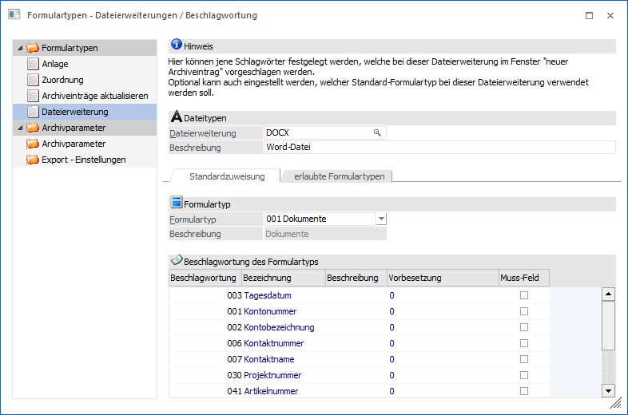
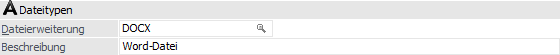
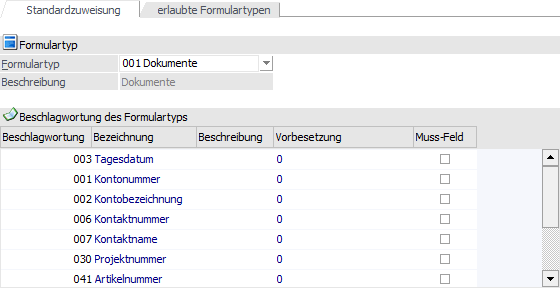
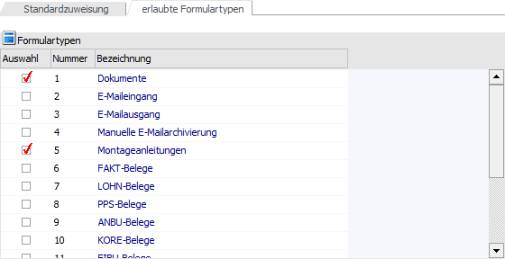
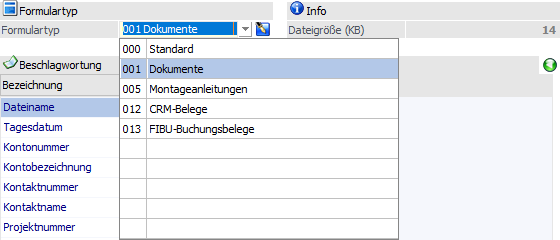

Damit bei externen Dokumenten automatisch der richtige Formulartyp genutzt / vorgeschlagen wird, bedarf es einer Art der Zuweisung. Diese kann mit Hilfe der Dateierweiterung des zu archivierenden Dokuments erfolgen, wobei die Definition "Dateierweiterung -> Formulartyp" im Menüpunkt…
1 WinLine ADMIN
1 Archiv
1 Formulartypen
1 Bereich "Formulartypen - Dateierweiterung"
… erfolgt.
Hinweis
Die Dateierweiterung (englisch "File Name Extension"), auch als Dateiendung oder Dateisuffix bezeichnet, ist der letzte Teil eines Dateinamens und wird gewöhnlich mit einem Punkt abgetrennt (wobei der Punkt selbst nicht als Teil der Erweiterung angesehen wird).

Es können folgende Eingabefelder bearbeitet werden:
Dateitypen

Ø Dateierweiterung
Eingabe der Dateierweiterung, unter der eine bestimmte Art von Dokumenten üblicherweise erkannt / archiviert wird. Die Erweiterung ist in der Regel 3 bzw. 4-stellig und vom Dateinamen durch einen Punkt getrennt. Über die in Windows eingestellte Verbindung zwischen der Erweiterung und einem Programm kann später das jeweilige Programm zum passenden Dokumenttyp gefunden werden.
Ø Beschreibung
Texteingabe, welche den Typ der Datei näher bezeichnet.
Register "Standardzuweisung"

In diesem Register kann ein spezieller Formulartyp direkt zugeordnet werden oder bei nicht verwenden eines Formulartyps die gewünschten Schlagwörter für die Dateierweiterung hinterlegt werden.
Ø Formulartyp
Aus der Auswahlliste kann der Formulartyp ausgewählt werden, welcher mit der Dateierweiterung verbunden werden soll.
ü 000 - <KEINE>
Wenn kein Formulartyp gewählt wird, besteht in der
Beschlagwortungstabelle die Möglichkeit die Schlagwörter individuell zu
hinterlegen (inklusive Beschreibung und Muss-Feld Definition).
ü 001 bis 999
Sobald ein bestehender Formulartyp
ausgewählt wurde, wird die Beschlagwortung, welche bei dem Formulartyp
hinterlegt ist, in die Beschlagwortungstabelle übernommen. Ein Ergänzen oder
Verändern der Beschlagwortung ist dabei nicht möglich.
Hinweis
Über den Formulartyp kann neben der Beschlagwortung auch die Berechtigung und ggfs. das Schreiben eines CRM-Eintrages gesteuert werden.
Tabelle "Beschlagwortung des Formulartyps"
In der Tabelle stehen folgende Spalten zur Verfügung:
Ø Beschlagwortung
Die an dieser Stelle hinterlegte Beschlagwortung wird bei der Archivierung eines Dokumentes automatisch vorgeschlagen, wenn mit dem entsprechenden Formulartyp gearbeitet wird.
Achtung
Wenn ein Formulartyp hinterlegt wurde (001 bis 999), kann die Beschlagwortung nicht verändert werden.
Ø Bezeichnung
In diesem Informationsfeld wird die Bezeichnung des gewählten Schlagwortes angezeigt.
Ø Beschreibung
An dieser Stelle eine zusätzliche Information, die den Zusammenhang zwischen dem Schlüsselfeld und den Dokumentinhalt näher beschreibt, hinterlegt werden. Hierbei ist darauf zu achten, dass die hier getätigte Eingabe auch den Standard-Eintrag bei der Archivierung eines neuen Dokuments darstellt. Erfolgt hier kein Eintrag, so werden die Daten - sofern vorhanden - vom Programm automatisch vorgeschlagen (z.B. Kontonummer, Kontoname, Tagesdatum).
Ø Muss-Feld
Durch Aktivieren dieser Option kann bestimmt werden, dass bei einem neuen Archiveintrag ein Feld mit einem Schlagwort befüllt werden muss. D.h. ohne eine Hinterlegung des Schlagwortes wäre eine Archivierung nicht möglich.
Hinweis
Bei der Archivierung
wird auf solch eine gekennzeichnete Beschlagwortung durch ein  in der Spalte "Pflichtfeld"
hingewiesen.
in der Spalte "Pflichtfeld"
hingewiesen.
Tabellenbuttons

Ø Zeile entfernen
Durch Anwahl des Buttons "Zeile entfernen" wird die aktuelle Beschlagwortung aus der Tabelle entfernt.
Ø Ausgabe Excel
Durch Anwahl des Buttons "Ausgabe Excel" wird der Inhalt der Tabelle an Microsoft Excel übergeben.
Ø Tabelleneinstellungen speichern
Die Spalten einer Tabelle können grundsätzlich an beliebige Positionen verschoben, bzw. in der Breite entsprechend angepasst werden. Durch Anwahl des Buttons "Tabelleneinstellungen speichern" werden die Einstellungen benutzerspezifisch gespeichert und bei dem nächsten Aufruf des Programmpunktes wieder vorgeschlagen.
Ø Gesamteinstellungen speichern
Im Gegensatz zu "Tabelleneinstellungen speichern" können mit "Gesamteinstellungen speichern" mehrere Tabellenaufbauten gespeichert und nach Wunsch geladen werden.
Register "erlaubte Formulartypen"

Im Register "erlaubte Formulartypen" können zusätzlich Formulartypen bestimmt werden, die bei der Dateierweiterung gewählt werden können / dürfen (Spalte "Auswahl"). Wurde keine Auswahl getroffen, so sind alle Typen möglich. Grundvoraussetzung hierfür ist, dass im Register "Standardzuweisung" ein Formulartyp ungleich "000 - <KEINE>" gewählt wurde.
Beispiel
Für die Dateierweiterung "DOCX" ist als Standardzuweisung der Formulartyp "001 - Dokumente" hinterlegt worden. Als zusätzlich erlaubte Formulartypen wurde "005 - Montageanleitung", "012 - CRM-Belege" und "013 - FIBU-Buchungsbelege" gewählt.
Wird nun als neuer Archiveintrag eine Datei mit der Erweiterung "DOCX" hinzugefügt, stehen als Formulartypen "Dokumente" (Standard), sowie "Montageanleitungen", "CRM-Belege" und "FIBU-Buchungsbelege" zur Verfügung.

Buttons

Ø Ok
Durch Drücken des Buttons "Ok" oder der Taste F5 werden die vorgenommenen Einstellungen gespeichert.
Ø Ende
Mit dem Button "Ende" oder der ESC-Taste wird das Fenster geschlossen und alle nicht gespeicherten Eingaben verworfen.
Ø Löschen
Durch Anwahl den Buttons "Löschen" wird die aktuelle Dateierweiterung gelöscht.